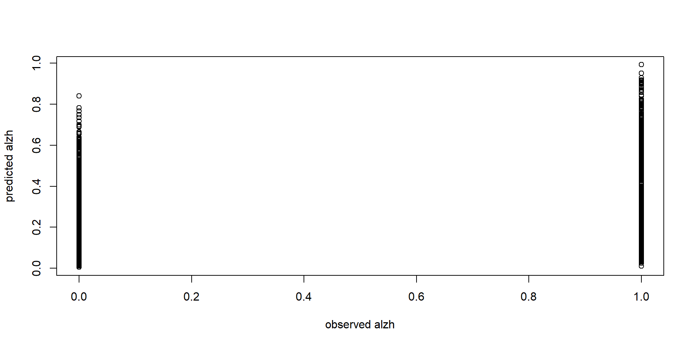
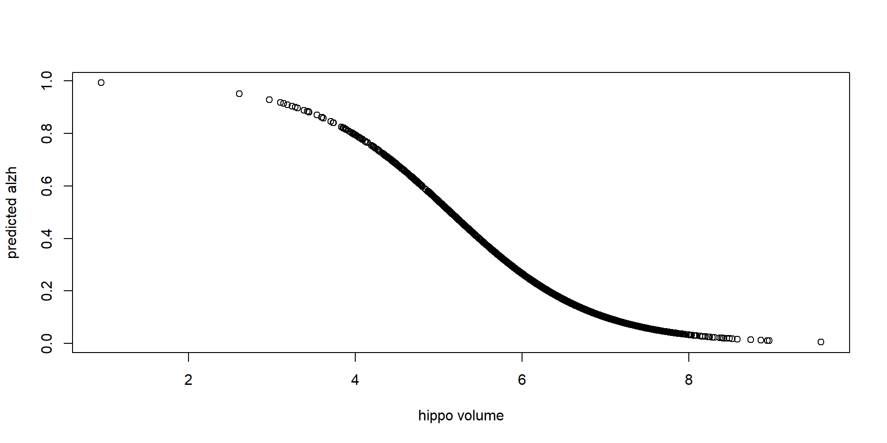

Day 6 - Logistic Regression
2024-07-13
Load Libraries
Read Data and Create a Binary Variable
Code
#read, select variables
#remove impaired, and define new variables
alzheimer_data <- read.csv('data/alzheimer_data.csv') %>%
select(id, diagnosis, age, educ, female, height, weight, lhippo, rhippo) %>%
filter(diagnosis!=1) %>%
mutate(alzh=(diagnosis>0)*1, female = as.factor(female), hippo=lhippo+rhippo)
table(alzheimer_data$alzh)
0 1
1534 553 
Motivation
alzheimer vs hippocampal

- Any comments?
Predict Binary Responses (wrong way)
- Now let us do predictions using linear regression
Code
alzh.lm=lm(alzh ~ hippo, data=alzheimer_data)
#add lm.pred variable
alzheimer_data$lm.pred=predict(alzh.lm)
#add red flags
alzheimer_data$lm.pred.red = alzheimer_data$lm.pred
alzheimer_data$lm.pred.red[alzheimer_data$lm.pred<1 &
alzheimer_data$lm.pred>0]=NA
ggplot(alzheimer_data) +
geom_point(aes(x=alzh, y=lm.pred)) +
geom_point(aes(x=alzh, y=lm.pred.red), col="red") +
geom_hline(yintercept = c(0,1), col='red') +
labs(x="true alzh", y="predicted by lm")- Is
alzh.lma good model?
Binary Response Variables
Recall that
alzhis a binary variable.We tries linear regression:
alzh\(\sim\)hippo- It does not fit well: the difference between fitted and observed is large for most data points.
- The predicted/ values for the binary response variable
alzhcan be greater than 1 or less than 0.
How to Model Binary Responses?
Linear regression is not good choice for a binary response variable.
When the response variable is binary, such as
alzh, how should we model it using one or multiple covarites?Recall that a Bernoulli distribution can be used to characterize the behavior of a binary random variable.
Bernoulli Distribution and Log-Odds
How to Model Binary Responses?
- Let \(Y_i\) denote the response variable of the \(i\)th subject. When there is not covarites \(x's\), we use Bernoulli distribution \[Y_i \sim Bernoulli(\pi)\]
- \(P(Y_i=1)=\pi\).
- \(P(Y_i=0)=1-\pi\).
- Here we use \(\pi\) instead of \(p\) to denote the success probability for better clarity.
How to Model Binary Responses?
When there is one explanatory variable, denoted by \(x_i\) for subject \(i\), it is reasonable to assume that the
successprobability is a function of \(x_i\), i.e., \[Y_i \sim Bernoulli (\pi(x_i))\]How do we define \(\pi(x_i)\)? Does the following linear function work? \[\pi(x_i)=\beta_0 + \beta_1 x_i\]
The Successful Probability \(\pi(x_i)\)
- \(\pi(x_i)\) is the probability for \(Y_i\) being 1, i.e.,
\[\pi = E[Y_i].\]
One issue with \(\pi( x_i)=\beta_0 + \beta_1 x_i\) is that the range can be any real value.
Because \(\pi(x_i)\) is a probability, it is desirable to make sure that it is \(\in [0,1]\).
How?
Odds
- In statistics, odds quantifies of the relative probabilities of an event and its complement
\[odds=\frac{P(A)}{P(A^c)}=\frac{P(A)}{1-P(A)}.\]
- For a binary variable \(Y\), the odds is
\[odds = \frac{P(Y=1)}{P(Y=0)}\]
- The range of odds is \([0,\infty)\). Can you find transformation such as that the range is \((-\infty, \infty)\)?
Log-Odds and Logit Transformation
- \(log \left( \frac{\pi_i}{1-\pi_i}\right)\) is called the logit function, i.e.,
\[logit(\pi_i)=log \left( \frac{\pi_i}{1-\pi_i}\right)= log \left(\frac{E[Y_i=1]}{E[Y_i=0]} \right).\]
Logistic Regression
Logistic Regression
- Now we have found a reasonable way to connect \(\pi\) to \(x_i\)
\[log \left( \frac{\pi_i}{1-\pi_i}\right) = log \left(\frac{E[Y_i=1]}{E[Y_i=0]} \right)= \beta_0 + \beta_1 x_i\]
In addition, we also have the mechanism to model uncertainty: \(Y_i \sim Bernoulli(\pi_i(x_i))\).
This is known as logistic regression.
Note: \(\pi=\frac{e^{\beta_0 + \beta_1 x_i}}{1+e^{\beta_0 + \beta_1 x_i} }\).
Compute the Estimates
For a linear regression model, we have closed-form solutions.
This is not true for a logistic regression.
Estimation of is typically conducted by maximizing the corresponding likelihood function.
\(\hat\beta_0\) and \(\hat\beta_1\) have to be obtained using numerical algorithms. How?
- Iteratively re-weighted least squares (IRLS): the default method used by R
- The Newton-Raphson algorithm
Logistic Regression in R
Code
Estimate Std. Error z value Pr(>|z|)
(Intercept) 6.093409 0.41017858 14.85550 6.408616e-50
hippo -1.184699 0.06916233 -17.12926 8.979352e-66Note,
glmstands for generalized linear models, which include linear regression and logistic regression as special situations.\(\hat\beta_0=6.093409, \hat\beta_1=-1.184699\).
How should we interpret these values?
Interpretation
Interpret Results
- Consider \(x_i=x_0\), the log-odds of AD is
\[logit(\hat\pi_i) = \hat\beta_0 + \hat\beta_1 x_0\]
- If we increase the explanatory by one unit, the log-odds becomes
\[logit(\tilde \pi_i) = \hat\beta_0 + \hat\beta_1 x_0 + \hat\beta_1\]
- Therefore, \(logit(\tilde \pi_i)-logit(\hat \pi_i)=\hat\beta_1=-1.184699\).
Interpret Results
We have obtained the change in log-odds associated with one-unit increase in \(x\).
How can we convert it to changes in odds, which is more well understandable?
By the definition of
logit, we have
\[logit(\tilde\pi_i) - logit(\hat\pi_i)=log\frac{\tilde \pi_i}{1-\tilde \pi_i} -log \frac{\hat \pi_i}{1-\hat \pi_i}=log \frac{\frac{\tilde \pi_i}{1-\tilde \pi_i}}{\frac{\hat \pi_i}{1-\hat \pi_i}}=-1.184699\]
Interpret Results
- Taking the exponent on both sides of the equation,
\[\frac{\frac{\tilde \pi_i}{1-\tilde \pi_i}}{\frac{\hat \pi_i}{1-\hat \pi_i}}=exp(-1.184699)=0.3058\]
- The new odds is 30.58% of the odds.
- In other words, if the hippocampal value increases by 1cc, the odds of AD decreased by 1-30.58%=69.42%.
Confidence intervals
- The
conffunction in R can be used to find confidence intervals for log-odds. - We need to convert the results to odds
Confidence intervals
Recall that the estimated decrease of AD associated with one-unit increase of hippocampal volume is 69.42%.
A 95% confidence interval is [64.98%, 73.29%].
P-value
Estimate Std. Error z value Pr(>|z|)
(Intercept) 6.093409 0.41017858 14.85550 6.408616e-50
hippo -1.184699 0.06916233 -17.12926 8.979352e-66- The p-value is very small, about \(9.0\times 10^{-66}\)
- indicating reject the null hypothesis \(H_0: \beta_1=0\)
- suggesting that AD is significantly associated with hippocampal volume.
Predicted Value vs Observed Values
- Note, when using
predict, it is necessary to specify the correct type of prediction.- The default is on the scale of the linear predictors (log-odds).
- The
responsetype gives predicted probability.
Predicted Value vs Observed Values
\(X\) vs Observed Values
With Multiple \(X\)’s
Similar to linear regression, we can include multiple explanatory variables.
Connect \(\pi_i\)(i.e., \(E[Y_i]\)) to a linear function of the \(\vec x_i\): \[log\frac{\pi_i}{1-\pi_i} = \beta_0 + x_{i1} \times \beta_1+ … + x_{ip} \times \beta_p\]
And \(Y_i \sim Bernoulli (\pi)\).
Example
Code
Estimate Std. Error z value Pr(>|z|)
(Intercept) -2.02463880 0.455844285 -4.441514 8.932811e-06
age 0.04015417 0.005001781 8.027974 9.909571e-16
female1 -0.87341587 0.105761683 -8.258339 1.477131e-16
educ -0.08759757 0.015192451 -5.765862 8.124175e-09Example: Interpretation
- Consider the age variable. The estimated coefficient is 0.04015417. What information does it provide?
- The estimated log-odds AD for subject \(i\) is (or add a constant , see the slides about retrospective studies) \[logit(\hat\pi_i) = \hat\beta_0 + \hat\beta_{age} age_i + \hat\beta_2 female_i + \hat\beta_3 educ_i\]
- Let \(\tilde \pi_i\) denote estimated log-odds after one year \[logit(\tilde\pi_i) = \hat\beta_0 + \hat\beta_{age} (age_i+1) + \hat\beta_2 female_i + \hat\beta_3 educ_i\]
Interpretation
- The estimated change in log-odds \[logit(\tilde\pi_i) - logit(\hat\pi_i)=log\frac{\tilde \pi_i}{1-\tilde \pi_i} -log \frac{\hat \pi_i}{1-\hat \pi_i}=0.018138\]
- Take exponential of both sides, we have \[\frac{\frac{\tilde \pi_i}{1-\tilde \pi_i}}{\frac{\hat \pi_i}{1-\hat \pi_i}} = exp(0.04015417)\]
Interpretate Coefficients
The odds of AD in one year later is \(exp(0.04015417)=\) of the current odds.
When holding gender and education fixed, the estimated increase in odds of AD in a year is \(e^{0.04015417}-1=4.097\%\)
A 95% confidence interval is [3.08%, 5.12%].
Interpretate Coefficients
- What if we are interested in the increase in odds of AD in ten years (everything else is fixed)?
- The estimated increase in odds of AD in 10 years is \[e^{10*0.04015417}-1=49.4\%\]
- A \(95\%\) C.I. for 10-year increase in odds: [35.5%, 64.8%].
Significance and P-value
- Lastly, let’s take a look at significance.
- All the three explanatory variables are significant.
Estimate Std. Error z value Pr(>|z|)
age 0.04015417 0.005001781 8.027974 9.909571e-16
female1 -0.87341587 0.105761683 -8.258339 1.477131e-16
educ -0.08759757 0.015192451 -5.765862 8.124175e-09